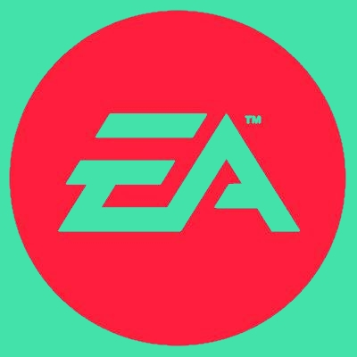

Ubisoft est une entreprise française de développement, d'édition et de distribution de jeux vidéo, créée en mars 1986 par les cinq frères Guillemot, originaires de Carentoir en Bretagne.
En 2015, elle se définit comme le troisième plus grand éditeur indépendant du monde.
Ubisoft figure parmi les leaders mondiaux de la création, édition et distribution de jeux vidéo et de services interactifs,
avec un riche portefeuille de marques de renommée internationale. Les équipes d'Ubisoft, à travers son réseau mondial de studios et de filiales de distribution,
s'engagent à offrir aux joueurs des expériences de jeu originales et inoubliables sur l'ensemble des plateformes populaires.

EA est une société américaine fondée le 28 mai 1982 et dont le siège se situe à Redwood City en Californie1. EA est l'un des principaux développeurs et producteurs mondiaux de jeux vidéo.
La société occupe la place de leader sur ce marché jusqu'en 2008, notamment grâce à des rachats de sociétés et de franchises de jeux, mais aussi en acquérant les droits de licences sportives, comme celles de la FIFA, la NBA, la NFL, ou encore celle de la LNH.
Electronic Arts est, en 2013, la 5e plus grande société commercialisant des jeux vidéo, par chiffre d'affaires.
Nous avons collaborés avec EA et les studios BioWare sur les licenses Mass Effect et nous sommes très fier de voir que la license est devenu très important dans le jeu-vidéo.

Apple est une entreprise multinationale américaine qui conçoit et commercialise des produits électroniques grand public, des ordinateurs personnels et des logiciels informatiques.
Parmi les produits les plus connus de l'entreprise se trouvent les ordinateurs Macintosh, l'iPod, l'iPhone et l'iPad, la montre Apple Watch, le lecteur multimédia iTunes, la suite bureautique iWork,
la suite multimédia iLife ou des logiciels à destination des professionnels tels que Final Cut Pro et Logic Pro.
Nous sommes partenaire avec Apple car nous collaborons dans le cadre d'application mobiles sur leur plateforme uniquement